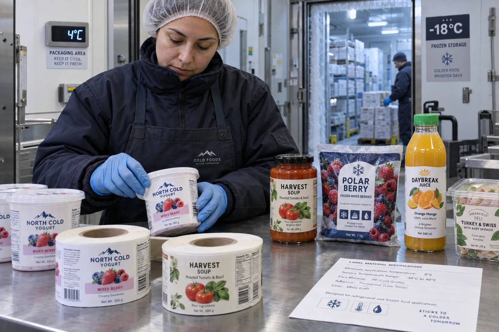

Short answer
Minimum application temperature is the lowest recommended temperature while the label is being applied. Service temperature is the range the label can handle after it has bonded. They are different numbers because pressure-sensitive adhesive needs enough mobility to wet the package surface before it can resist later cold.
At the quote desk, “freezer label” sounds complete. It is not. I need to know whether the tray is labeled warm and frozen later, labeled at 4°C on a packing line, or labeled after frost has formed at -18°C. The same finished package can require three different adhesive decisions.
The two temperatures answer different questions
| Specification | Question it answers | Typical mistake |
|---|---|---|
| Minimum application temperature | Will the adhesive grab during labeling? | Using the later freezer temperature |
| Service temperature | Will the formed bond remain functional? | Assuming it proves cold application |
| Package surface temperature | How cold is the actual contact surface? | Reading room air instead of the pack |
| Dwell time | How long can adhesion build before cooling? | Testing immediately and rejecting too early |
| Moisture condition | Is water or frost blocking contact? | Calling every wet failure an adhesive failure |
A composite frozen-meal inquiry
This is a composite planning example. A buyer asks for labels that work at -18°C. I originally assume the cartons are labeled at room temperature and sent through a freezer tunnel. The production supervisor later sends one photograph: operators are relabeling already frozen cartons inside the cold room.
My first recommendation was not wrong on service temperature; it was wrong for the process. A standard permanent adhesive might remain secure at -18°C after warm application yet have almost no initial grab on a frosted carton. The photograph was worth more than the adjective “freezer-grade.”
Why cold reduces initial tack
Pressure-sensitive adhesive must flow into microscopic irregularities on glass, plastic, coated board or film. At lower temperature many adhesives become firmer and wet the surface less effectively. Avery Dennison's technical guide therefore tells buyers to consider both application and service temperatures and notes that many ambient constructions use a minimum application temperature around +5°C, while specialized chilled and deep-freeze options extend lower.
Those figures are examples, not a universal promise. The exact face stock, adhesive, liner, substrate and supplier data sheet control the decision. A freezer adhesive cannot bond through ice, oil or heavy condensation simply because its temperature rating is lower.
Apply warm and freeze later, or label in the cold?
Applying before freezing often gives the adhesive time to build a stronger bond. It can be the simpler and less expensive process when the filling sequence permits it. Applying in a chiller needs an adhesive with useful tack at the real package temperature. Applying to an already frozen package is the hardest case and should never be approved from a data sheet alone.
Surface type matters too. Smooth glass, low-surface-energy plastic, textured board and flexible frozen pouches present different contact areas. Measure temperature on each package, not one convenient steel conveyor rail.
Factory-side view
A colder rating is not automatically a better label
Specialized low-temperature adhesive can cost more, convert differently and be unnecessarily aggressive at room temperature.
If the brand can label clean, dry packages before freezing, a well-tested standard or chilled-food construction may be the more stable decision. The process should earn the material upgrade.
Run a process-matched trial
- Record package material, coating and surface roughness.
- Measure package surface temperature at application.
- Record condensation, frost, oil and cleaning residues.
- Apply labels with the real pressure, speed and label size.
- Check initial grab, then inspect after 24 and 72 hours.
- Cycle samples through freezing, thawing and handling when relevant.
- Approve the complete construction code, not a generic adhesive name.
What belongs on the request for quote
Send the package, labeling-room temperature, measured surface temperature, time before refrigeration, lowest storage temperature, expected shelf life and whether the pack will thaw or sweat. A short phone video of the application station often resolves questions that a spreadsheet misses.
Use the official Avery Dennison adhesive technical guide for the temperature definitions and product examples. For wider refrigerated-packaging choices, read Best Label Materials for Refrigerated Food Packaging.
Frequently asked questions
What is minimum application temperature for a label?
It is the lowest temperature at which the supplier recommends applying the label to the package. Surface temperature, moisture and pressure still affect the result.
What is label service temperature?
It is the recommended temperature range for a label that has already been applied and allowed to build adhesion on the substrate.
Can a label rated for minus 20 degrees Celsius be applied at minus 20?
Not necessarily. A construction may survive that service temperature while requiring application at 0 or 5 degrees Celsius. Check both values on the exact product data sheet.
Should frozen packages be warmed before labeling?
Sometimes labels are best applied before freezing or after controlled surface conditioning, but food safety and process controls come first. Test the approved workflow on the real package.
Related label guides
- Clear Label Sensors, Gaps and Eye Marks: Machine Guide
- Acrylic vs Rubber Adhesives for Product Labels
- Roll Label Splices: Acceptance and Machine-Run Guide
Review the complete label construction
Send package photos, material details, finished label size, quantity by artwork, storage conditions and application method. We can review fit, material and production details before preparing a quote and digital proof.